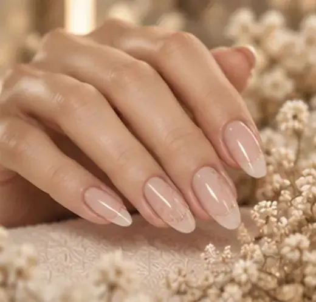
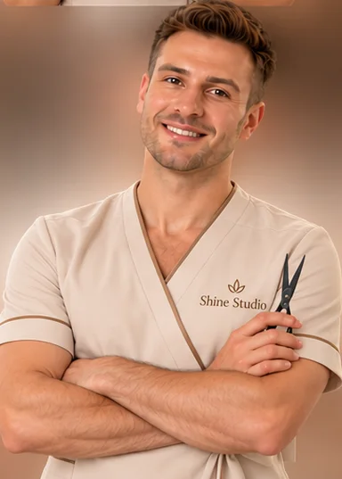
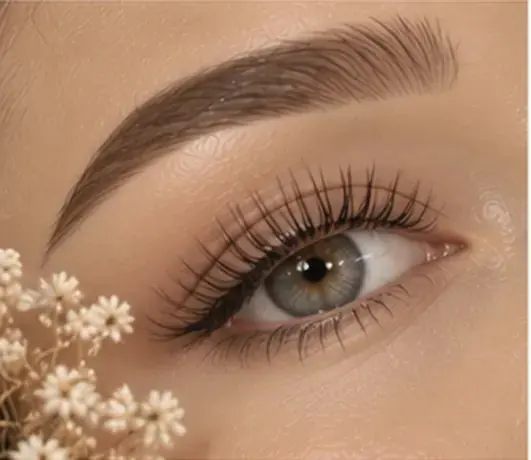
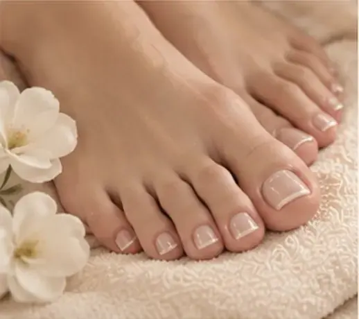
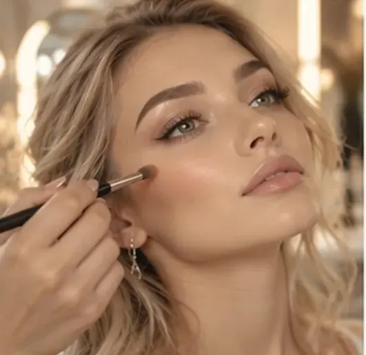
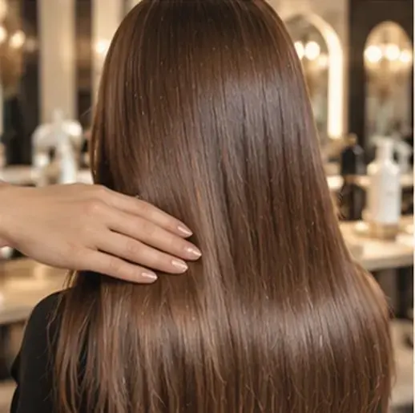
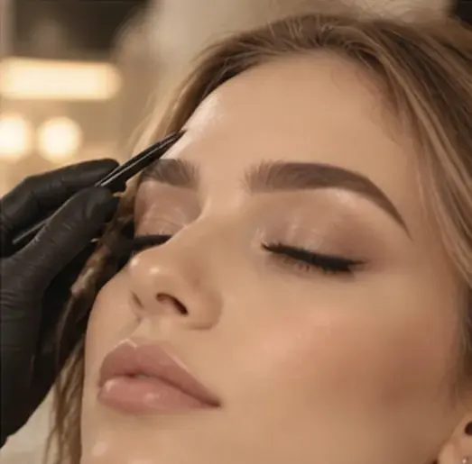
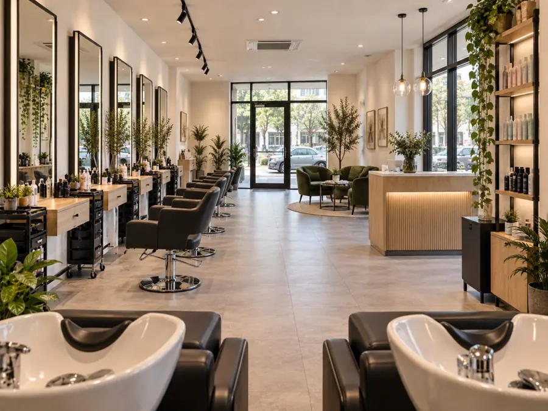
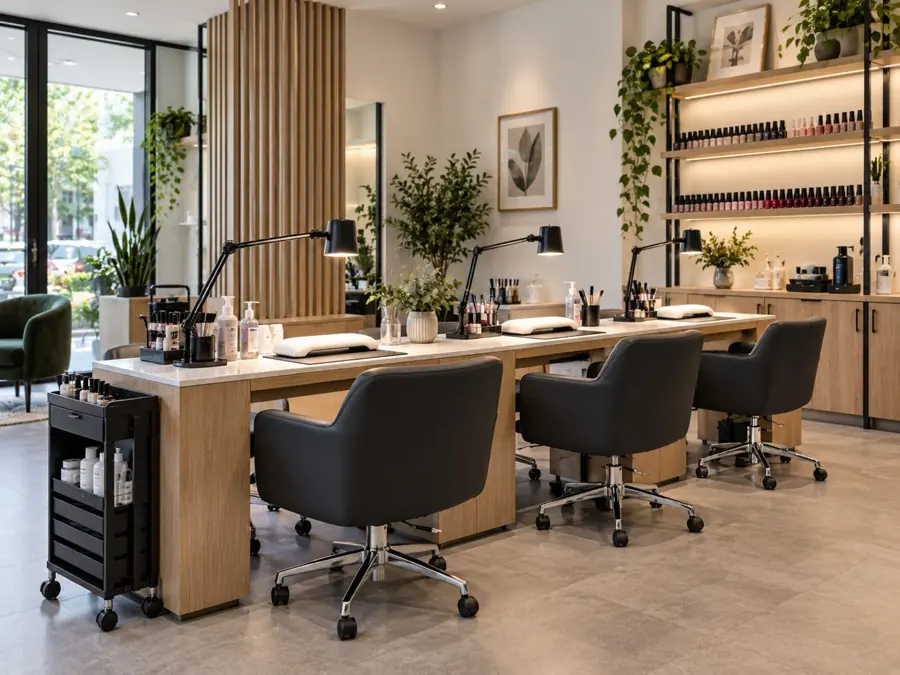
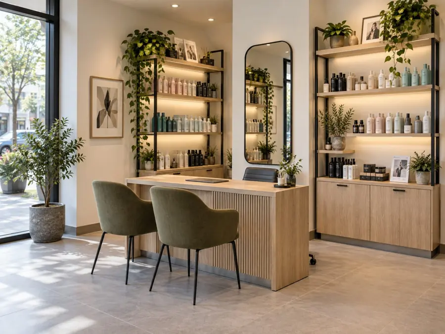

Мастер по уходу за волосами
Ирина
Возвращает волосам мягкость и блеск. Подбирает уход под структуру волос, чтобы результат держался долго.
Парикмахерские услуги, ногти, брови и макияж в Минске
Приём строго по записи, без очередей и ожидания. Ваше время для нас так же важно, как результат.
✓Цены на сайте актуальные




Выберите направление и отметьте услуги: покажем сумму и скидку 10% на первый визит. Отмеченное уйдёт вместе с заявкой.
Цены указаны по прайсу салона. Скидка 10% действует на первый визит.
Выберите того, кто вам по душе: у каждого своя специальность и свой подход.
Фото мастеров — примеры для демо-версии.
Возвращает волосам мягкость и блеск. Подбирает уход под структуру волос, чтобы результат держался долго.
Работает с цветом: тонирование, балаяж, окрашивание в один тон. Подбирает оттенок, который подчёркивает вас.
Делает педикюр без спешки: аккуратная обработка, ровное покрытие и лёгкость в каждом шаге.
Делает аккуратные модельные стрижки и следит за формой, чтобы образ оставался собранным между визитами.
Верит, что красивый взгляд начинается с красивой формы. Подберёт линию бровей так, чтобы лицо засияло по-новому.
Любит превращать пожелания в образ. Для него стрижка — это история, которую хочется носить с гордостью.
Знает, что макияж — не маска, а свет. Подчёркивает вашу природную красоту, а не рисует новую.
Рисует на ногтях маленькие истории. Идеальная форма и покрытие, которые радуют каждый день.
Возвращает волосам мягкость и блеск. Подбирает уход под структуру волос, чтобы результат держался долго.
Работает с цветом: тонирование, балаяж, окрашивание в один тон. Подбирает оттенок, который подчёркивает вас.
Делает педикюр без спешки: аккуратная обработка, ровное покрытие и лёгкость в каждом шаге.
Делает аккуратные модельные стрижки и следит за формой, чтобы образ оставался собранным между визитами.
Верит, что красивый взгляд начинается с красивой формы. Подберёт линию бровей так, чтобы лицо засияло по-новому.
Любит превращать пожелания в образ. Для него стрижка — это история, которую хочется носить с гордостью.
Знает, что макияж — не маска, а свет. Подчёркивает вашу природную красоту, а не рисует новую.
Рисует на ногтях маленькие истории. Идеальная форма и покрытие, которые радуют каждый день.
Листайте колоду: понравилась работа — смахните вправо. Из выбранного соберём ваш образ с ценой.
Фото работ — примеры для демо-версии.








Это все работы.
Откройте папку с нужной услугой, чтобы прочитать отзывы гостей. Нажмите на карточку, чтобы раскрыть её целиком.
Отзывы и имена представлены как пример оформления. Реальные отзывы будут добавлены после согласования с гостями.
Никаких звонков, если не хочется. Хотите поговорить, закажите звонок, и мы перезвоним.
Восемь мастеров, у каждого своя специальность. Посмотрите, чем занимается каждый, и выберите того, кто вам подходит.
В прайсе 34 услуг. У каждой указана цена, например, маникюр с гель-лаком 66,7 BYN.
Напишите их в заявке или скажите администратору: администратор ответит в рабочее время, подтвердит время или предложит ближайшее свободное. Салон работает ежедневно с 9:00 до 21:00.
Мы подтвердим запись по телефону. Точную стоимость назовём при записи.







Каждый мастер слушает ваш запрос и предлагает то, что действительно вам идёт. Это наш главный принцип.
Вопросы и ответы
Коротко о том, что чаще всего спрашивают перед записью.
В прайсе у каждой услуги указана цена. Итоговую стоимость мастер подтверждает при записи, до визита. На первый визит действует скидка 10%.
Да. При записи сначала выбираете мастера, потом процедуру, день и время. У каждого мастера свои рабочие дни, и в записи показаны только они.
Конечно. Это совсем не обязательно решать заранее. Оставьте заявку и коротко напишите, что хотите изменить: волосы, цвет, уход, маникюр или педикюр. Мы подскажем, кто из мастеров занимается нужным направлением, и предложим удобное время. А пока можно познакомиться со всеми восемью на сайте: у каждого есть фото, специальность и свой подход.
Закажите звонок: оставьте имя и телефон, мы перезвоним и подберём время вместе. Салон работает ежедневно с 9:00 до 21:00.
Мы работаем только с проверенными брендами. Названия брендов по каждому направлению назовёт администратор при записи.
Перенести или отменить запись можно по телефону салона заранее.
Скидка действует на первый визит. Она относится к любым услугам из прайса и не суммируется с другими акциями. Условия в демо-версии примерные.
Минск, [улица и дом] Маршрут можно построить в Яндекс Картах.
Оставьте имя и телефон, мы перезвоним, подтвердим мастера и время и назовём точную стоимость.